Computational Modeling and AI-Integrated Hyperthermia Therapy
AI-Driven Solutions for Thermo-fluids & Healthcare
Research Highlights
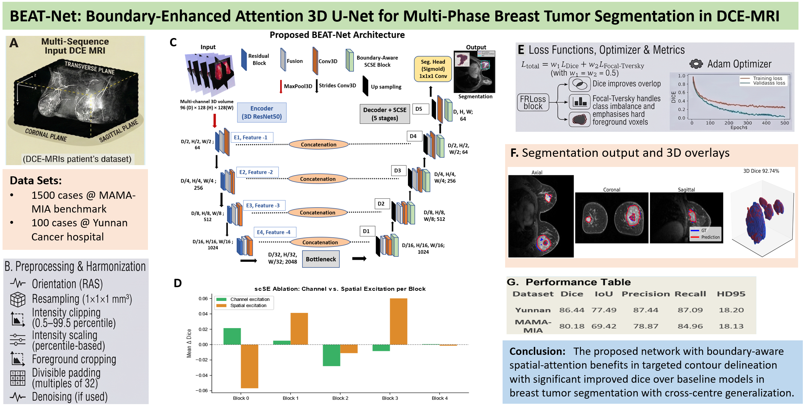
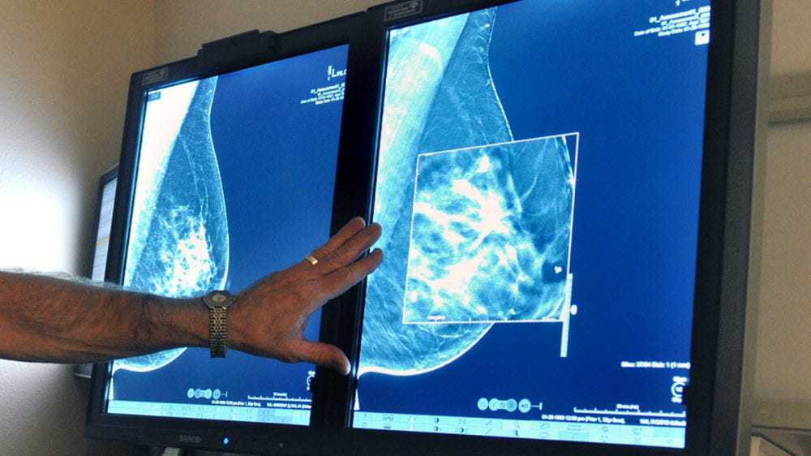
AI-ML in Healthcare
Our AI-driven research utilizes advanced deep learning architectures, such as boundary-enhanced 3D U-Nets (BEAT-Net), to accurately segment complex tumor morphologies from multi-sequence MRI scans. This automates detection, providing highly precise, patient-specific 3D tumor models that serve as a robust foundation for customized treatment strategies. By seamlessly integrating machine learning algorithms into clinical workflows, we aim to greatly accelerate diagnostics, reduce human error in radiological assessments, and enable targeted thermal treatments for improved clinical decision-making.
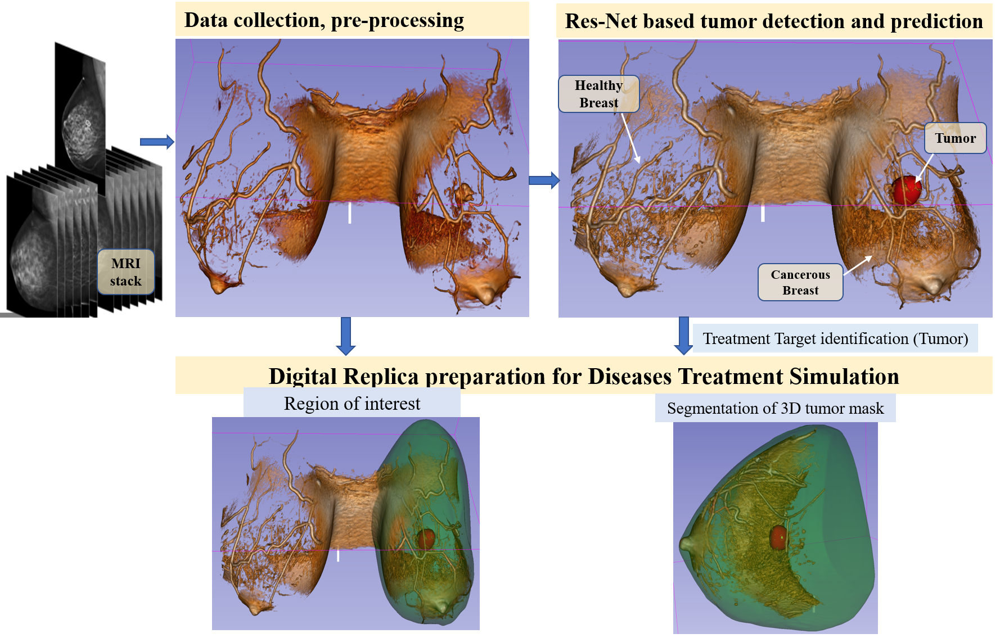
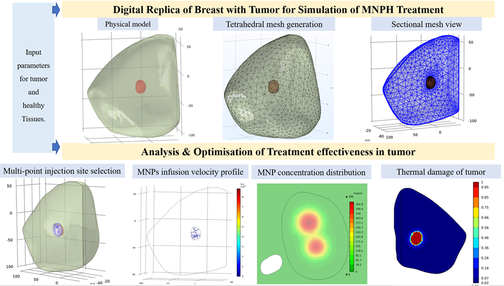
Disease Modelling
We leverage high-fidelity Computational Fluid Dynamics (CFD) to accurately model complex heat transfer and fluid flow phenomena within biological environments. By simulating transient flow patterns, species transport through convection and diffusion, and Darcy's equations in porous tissue, we can reliably predict localized stresses and temperature evolution. This comprehensive modeling framework helps map out tumor necrosis during thermal therapies, validates computational predictions against experimental data, and provides deep insights into vascular hemodynamics for safer clinical hypothesis testing.
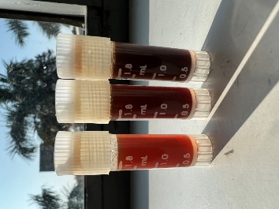
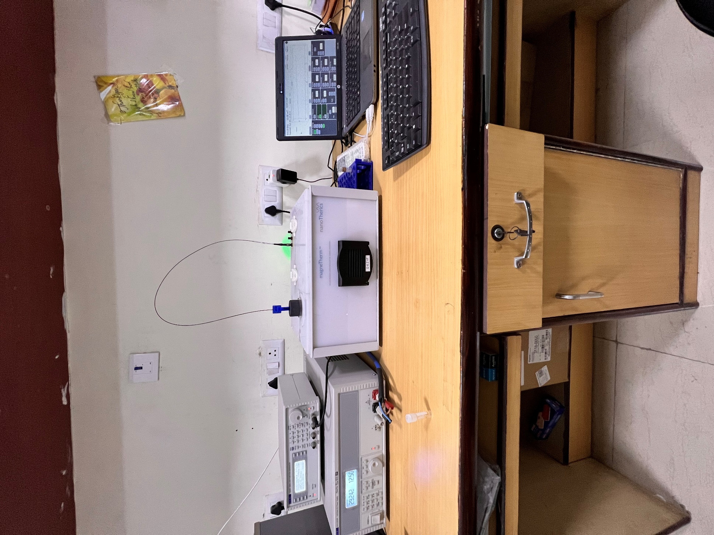
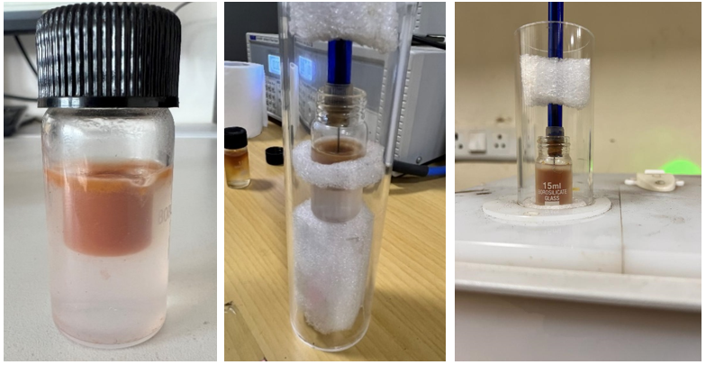
Synthetic Biology
Our synthetic biology research focuses on the optimization of superparamagnetic nanoparticles (MNPs) tailored for localized therapeutic applications. We rigorously analyze size-dependent magnetic properties and specific loss power (SLP) to maximize thermal energy delivery directly at tumor sites. By exploring different injection strategies and optimal MNP dosing for realistic breast tumor models, we aim to develop highly targeted magnetic hyperthermia protocols that efficiently destroy cancer cells while completely preserving the integrity of surrounding healthy tissues.
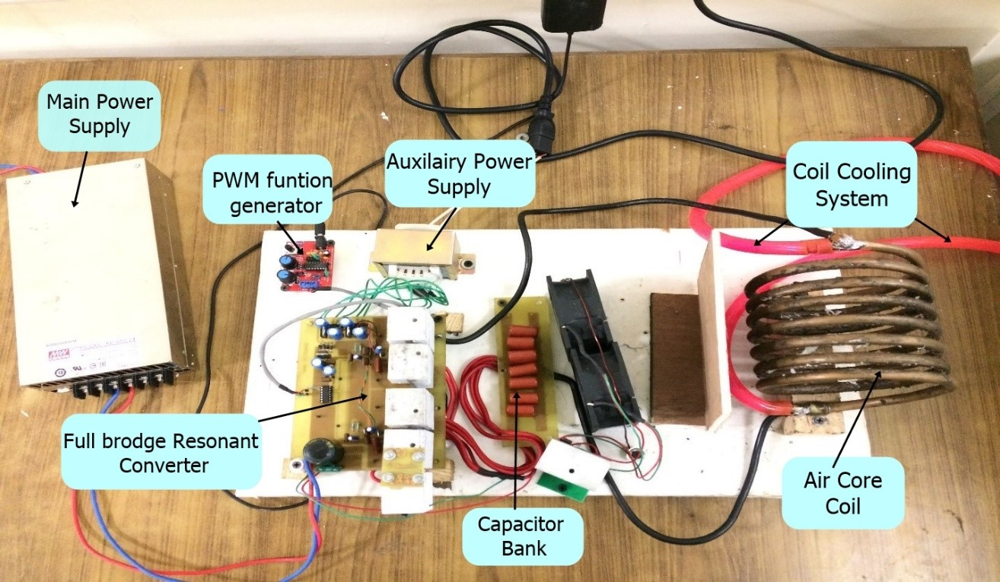
Medical Device Development
We successfully translate complex biophysical simulations and AI-driven predictive models into practical, life-saving medical devices and robust treatment protocols. Our team rigorously evaluates the performance of advanced thermo-fluid devices in clinical settings, ensuring highly accurate dosimetry and precise thermal control during magnetic hyperthermia therapies. By systematically testing heat dissipation and mapping thermal profiles in simulated environments, this research fundamentally refines device design and operational parameters, ultimately delivering reliable, non-invasive therapeutic tools for healthcare practitioners.
Integrative Research & Methodologies
AI-Driven Cancer Detection & Modeling
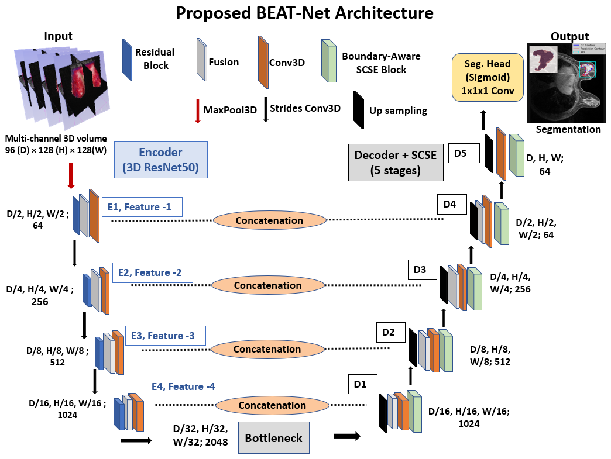
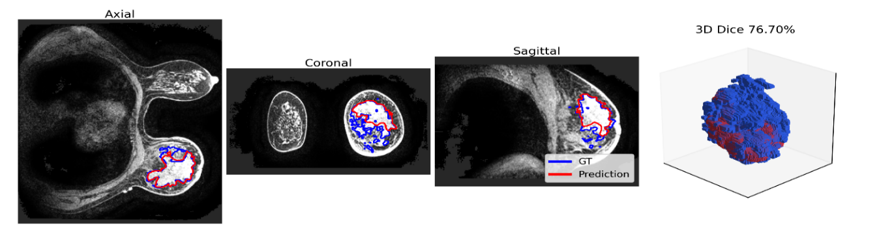
Computational Fluid Dynamics (CFD) in Healthcare
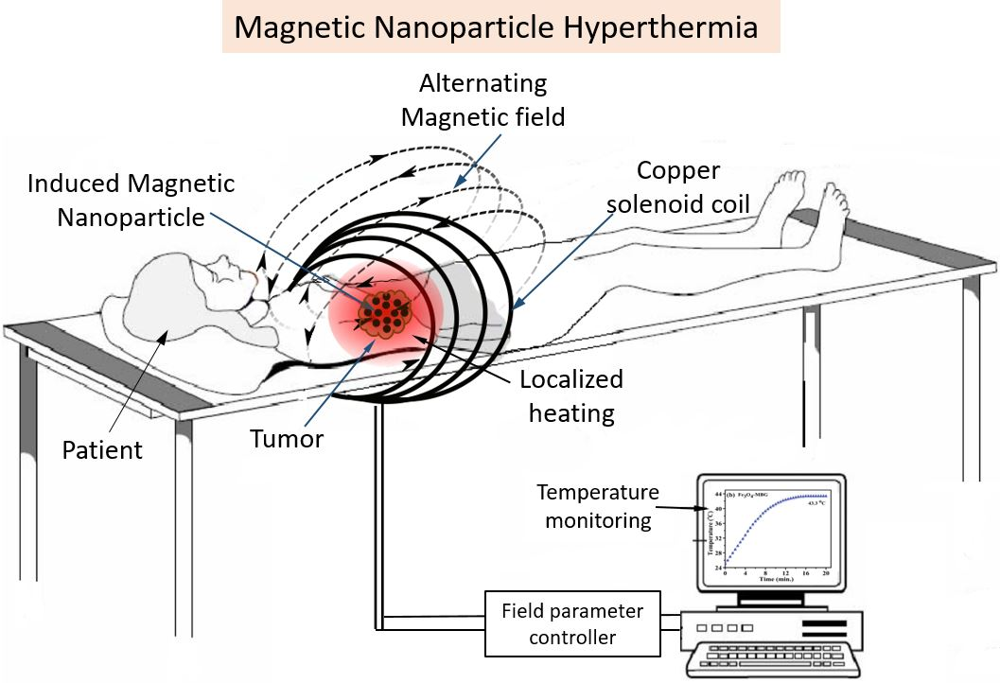
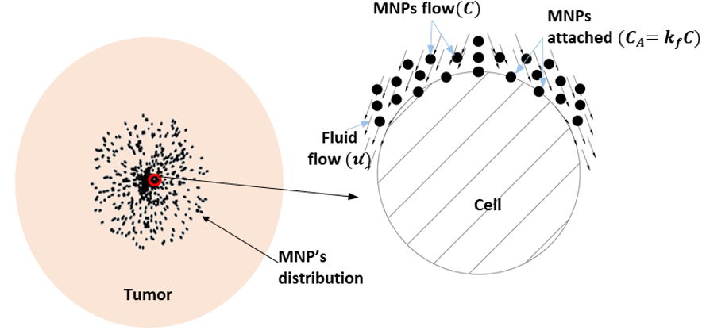
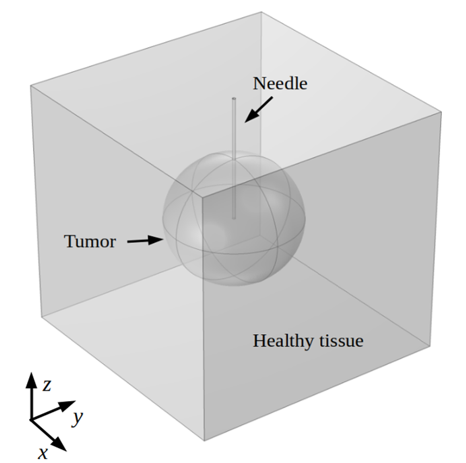
Magnetic Hyperthermia Optimization
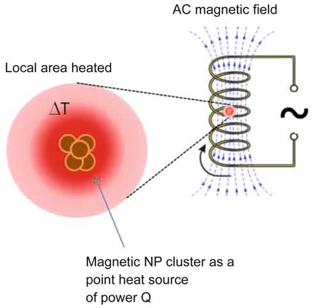
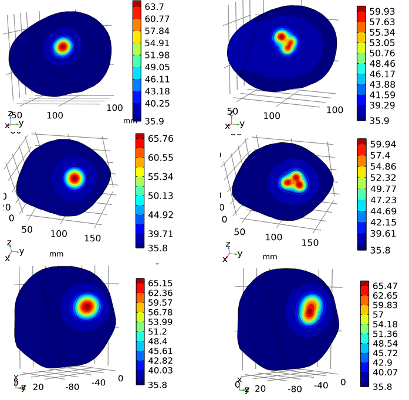
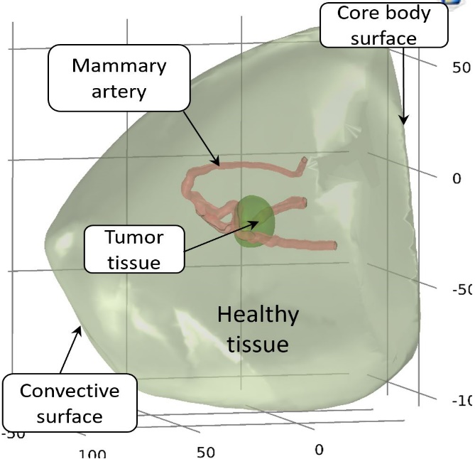
Explore Interactive Projects
AI-Driven Breast Cancer Segmentation (BEAT-Net) — DSAI-UQ TIET Joint Project
Clinical DCE-MRI patient dataset showing spatial orientations (Coronal, Transverse,
and Sagittal planes) parsed as multi-channel 3D volume inputs of dimensions 96 (D) × 128 (H) ×
128 (W) to segment complex morphology profiles and localize tumor regions.
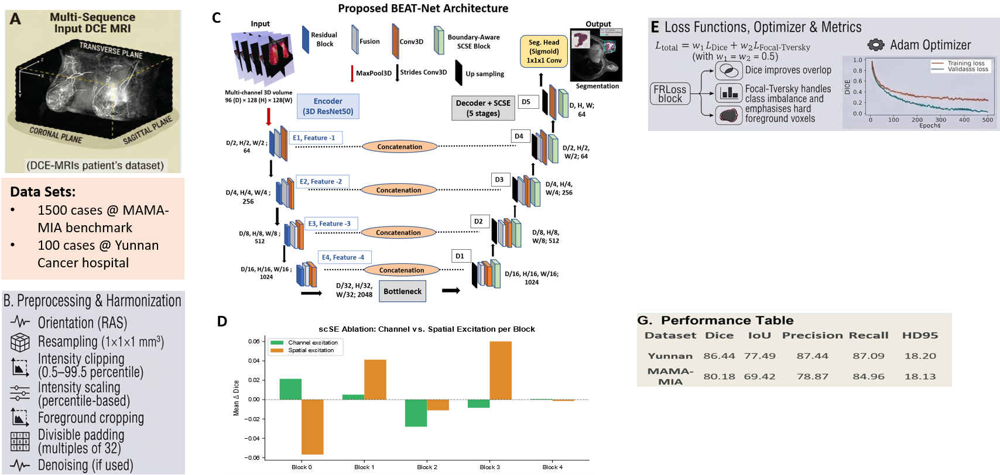
Figure 1.2: Proposed BEAT-Net (Boundary-Enhanced Attention 3D U-Net) Architecture
A detailed 3D U-Net variant incorporating a 3D ResNet-50 backbone encoder,
transposed convolution decoders, skip connections, and custom Boundary-Aware Spatial
Squeeze-and-Excitation (scSE) blocks to focus on complex tumor boundaries, optimized via composite DiceCE
and Focal Tversky loss.
Clinical overlays comparing expert Ground Truth boundaries against model
predictions on Yunnan and MAMA-MIA benchmark test cases. Select a case below:
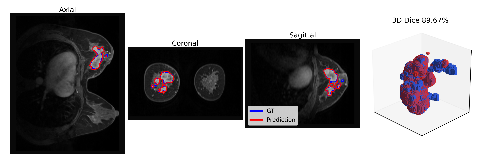
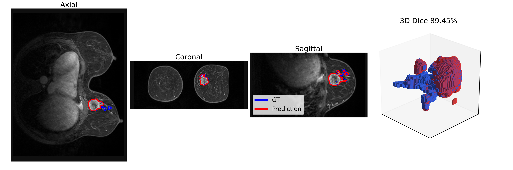
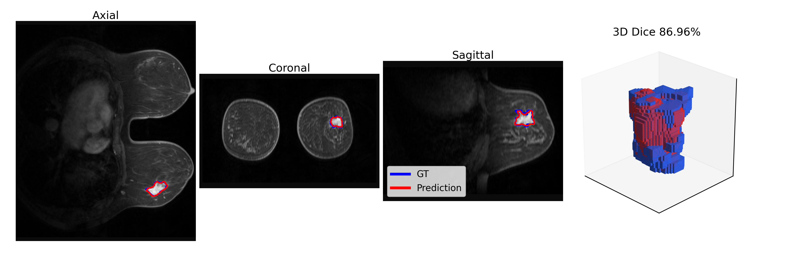
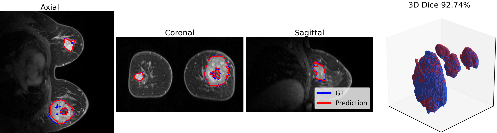
Dataset
Configuration
Dice Score (DSC)%
IoU (Jaccard)
Precision (PPV)
Recall/Sens.
HD95 (mm)
ASD (mm)
Yunnan Hospital (100
Cases)
Baseline 1 (Vanilla U-Net)
80.53%
69.82%
80.71%
83.85%
36.95
9.38
Baseline 2 (3D ResNet-50)
82.80%
72.86%
79.71%
89.86%
31.69
6.71
Proposed BEAT-Net
86.44%
77.49%
87.44%
87.09%
18.20
2.53
MAMA-MIA (1,506 Cases)
Reference Benchmark [2]
76.10%
64.40%
74.20%
81.30%
25.40
8.12
Proposed BEAT-Net
80.18%
69.42%
78.87%
84.98%
18.13
6.02
Table 1.1: Quantitative Metric Comparison and Ablation Study
Detailed evaluation metrics of the proposed BEAT-Net compared to standard baseline
networks. Incorporating the boundary-aware custom scSE attention layer yields a 5.9% Dice score
improvement and drops the Hausdorff Distance (HD95) by 50% (from 36.95 to 18.20 mm), validating superior
boundary contour delineation.
Magnetic Hyperthermia Project: Multi-Scale Physics & Design
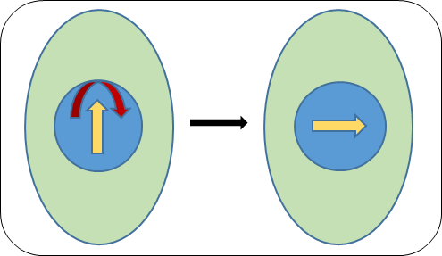
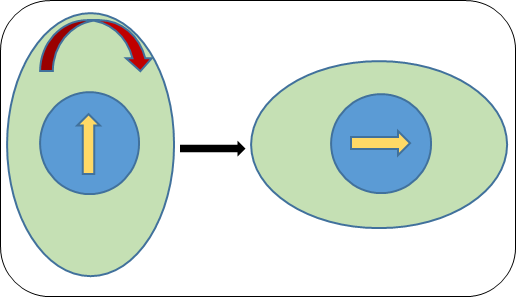
Figure 2.1: MNP AC Excitation and Relaxation Mechanisms
Magnetic nanoparticle hyperthermia mechanism under alternating magnetic field (AMF)
excitation. For single domain superparamagnetic nanoparticles, heat is generated by: (a) Néel
relaxation: rotation of magnetic moment inside the crystal core, and (b) Brownian
relaxation: physical rotation of the entire nanoparticle within fluid suspensions.
Size (nm)
CoFe2O4 Blocking Temp (K)
MnFe2O4 Blocking Temp (K)
Fe3O4 Blocking Temp (K)
8
260
110
125
10
322
140
137
12
370
180
152
15
420
225
175
20
470
275
215
Table 2.1: Particle Size-Dependent Anisotropy and Blocking Temperature
Size-dependent magnetic anisotropy ($K_{eff}$) evaluated as a function of blocking
temperature ($T_B$) extracted from experimental data. Dynamic saturation magnetization ($M_S$) and
Specific Loss Power (SLP) are calculated based on variable core volumes ($D^3$) for
CoFe2O4, Fe3O4, and MnFe2O4 systems.
Governing equations mapping Darcy's flow equations for tissue pressure, MNPs
transport & attachment dynamics during injection, and the Pennes Bioheat transfer equation
incorporating metabolic heat generation (Q_m) and spatial electromagnetic energy absorption (Q_E) to
calculate the temperature field in the tissue.
Figure 3.1: Intratumoral Multi-point Infusion Protocol and Dosage Criteria
Left: 3D physical model of tumor and healthy tissue boundary showing needle
injection. Center: MNP dispersion flow ($u$) and cell attachment model ($C_A = k_f C$). Right: Physical
patient-specific breast tumor, mammary artery, and tumor boundary alignment. The table shows MNP mass
infused under Constant Dose (CD) vs Reduced Dose (RD) protocols, confirming that the effective dose
($g/cm^3$) drops by 50% as the tumor volume increases by 5 times.
Figure 3.2: 3D Breast Heatmaps with Embedded Vascular Structures
COMSOL simulation results showing regional temperature
distribution inside realistic breast geometries under diverse arterial flow configurations, evaluating
heat sink effects of the mammary artery and its vascular branches.
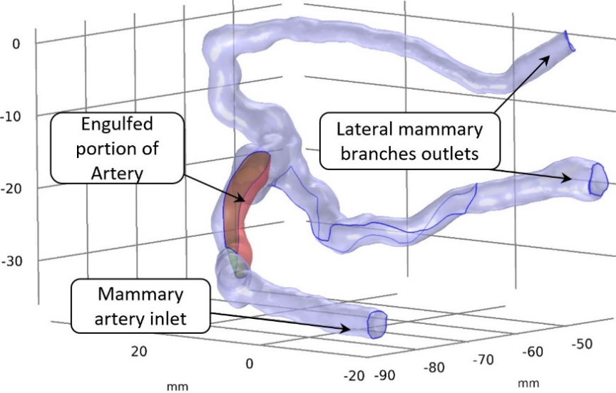
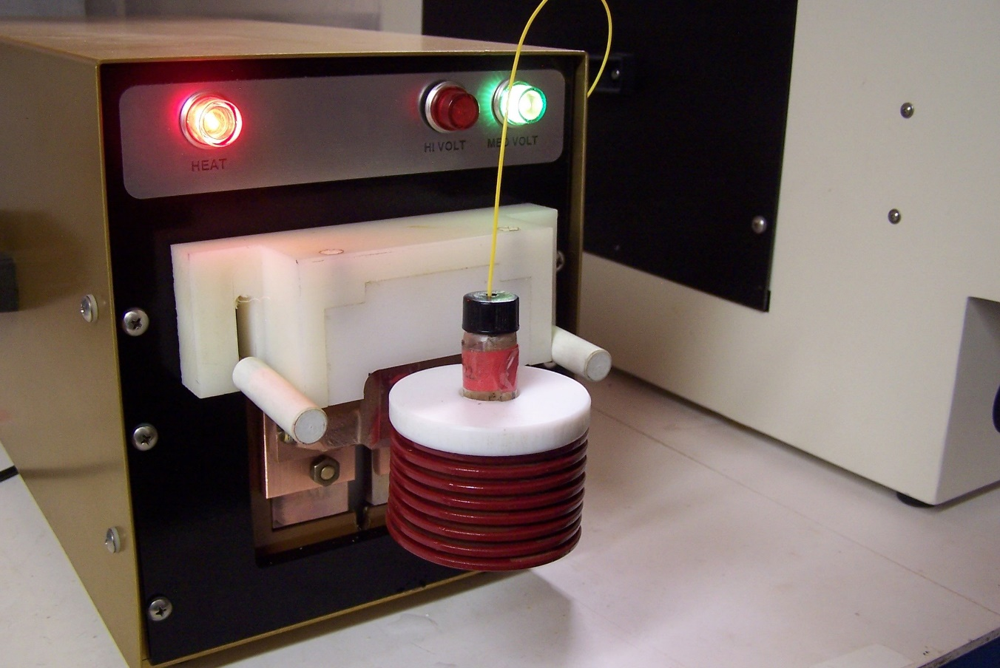
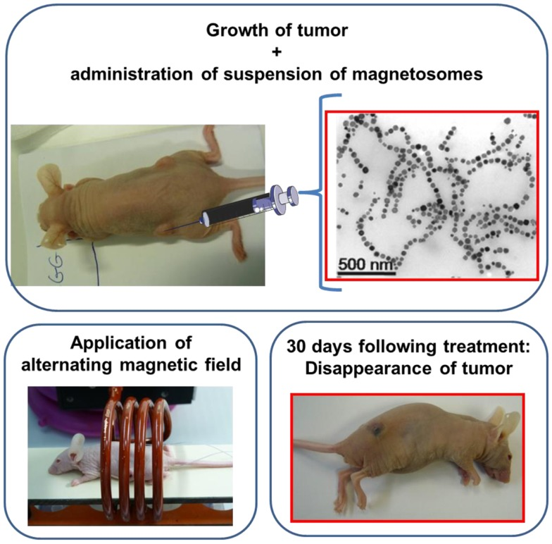
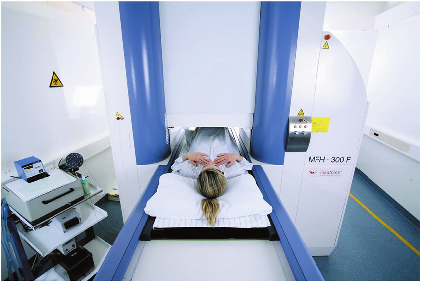
Flow Condition
Tumor Tissue Damage (%)
Healthy Tissue Damage (%)
Max Temperature Tmax (°C)
With Arterial Flow
74.5%
1.74%
61.37°C
Without Arterial Flow
90.1%
1.78%
65.00°C
Table 3.1: Vascular Heat Sink Effect Comparison
Quantification of tissue thermal damage (Arrhenius damage parameter $\Omega \ge
4.6$) with and without blood flow. The arterial blood flow acts as a significant heat sink, dropping tumor
thermal damage by 15.6% during MNPH. Lab induction coils (left), in-vivo mouse tumor resolution over 30
days (center), and clinical hyperthermia portals (right) validate these bioheat transport simulations.
Extruded building formations matching geographic footprints on
the TIET campus overlay.
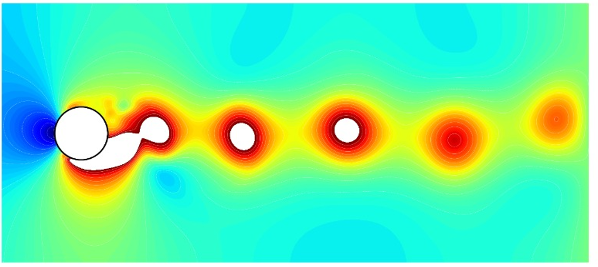
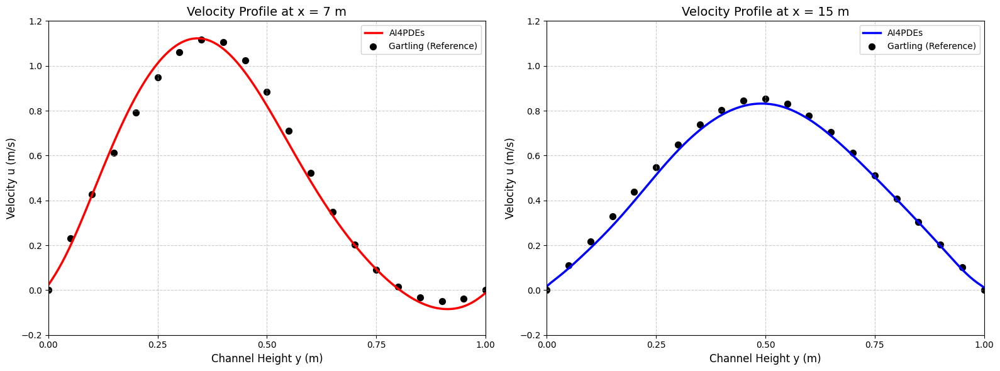
Figure 4.2: Vortex Shedding Contours and AI4PDEs Velocity Validation
Left: CFD contour plot showing transient Von Kármán vortex street
shedding past a circular cylinder. Right: Boundary velocity profiles comparing the developed AI4PDEs
neural solver (Solid Lines) against benchmark Gartling reference models (Black Dots) at channel widths of
x = 7m and x = 15m. Grid size: 1024 × 1024 × 128 (134,217,728 nodes) equivalent to 2 hours of
simulated urban flow.
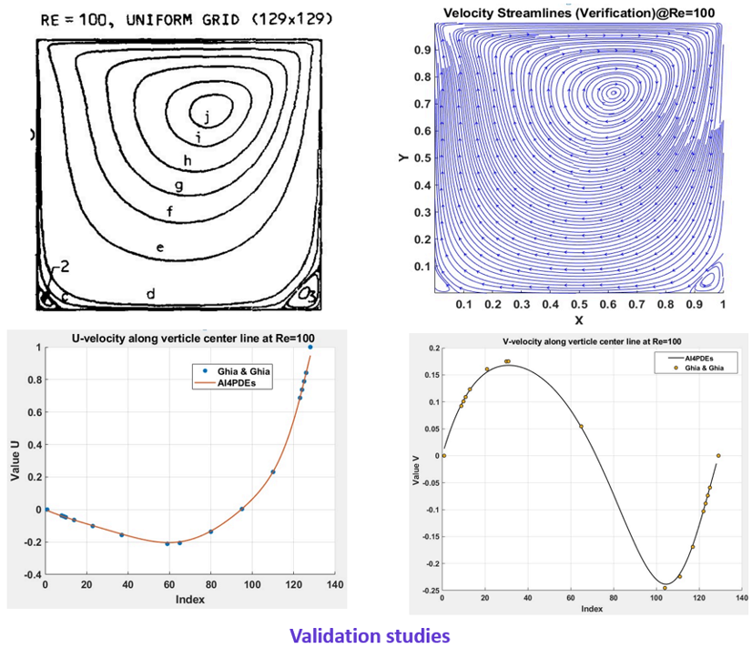
Figure 4.3: CFD Simulation Validation against Experimental Data
Validation plots showing the correlation of the transient flow patterns and
pressure coefficients between computational fluid dynamics (CFD) model predictions and wind tunnel
experimental measurements, confirming high simulation accuracy.
Frequently Asked Questions
What is your primary research focus?
My research primarily focuses on computational fluid dynamics (CFD), biophysics, and AI-driven modeling for breast cancer detection and magnetic hyperthermia treatment.
Are you open to academic collaborations?
Absolutely. I actively collaborate with institutions like Imperial College London, Virginia Tech, and PGIMER Chandigarh. Feel free to reach out via the Contact section to discuss potential projects.
Where can I find your latest publications?
You can find my latest peer-reviewed articles in the "Recent Publications & Impact" section on this page, or by visiting my Google Scholar and ORCID profiles linked below.
Research Associate at the Center of Excellence in Data Science and Artificial Intelligence (CoE-DSAI) focused on AI-Driven modeling, segmentation, and optimization of breast cancer detection and treatment through magnetically induced hyperthermia therapy, and environmental pollution modeling.
Research Interests
Thermo-fluid transport processes in biological systems
Biophysics and targeted biomedical cancer therapies
Computational Fluid Dynamics (CFD) and numerical simulation
Modelling of biological flows based on morphology and hemodynamics
AI-driven cancer detection and medical image segmentation
Bachelor of Engineering student in Computer Engineering (CGPA: 8.49) at Thapar Institute, specializing in building configuration-driven training pipelines for CNN-based PDE surrogate models, packaging 3D breast cancer segmentation architectures, and optimizing distributed job runs on institutional HPC clusters.
Academic Background
Bachelor of Engineering (Computer Engineering), Thapar Institute (Expected May 2028) | CGPA: 8.49
Achievements
HackTU 6.0 MLH Hackathon Winner (2025) — Secured first place among 300+ participants
Solved 160+ algorithmic problems on LeetCode in C++, focused on dynamic programming, graphs, and binary search
Selected Projects
AxiomCloud — AutoML Platform: Built FastAPI + Next.js 14 AutoML platform supporting 9 algorithms with Optuna tuning, SHAP/LIME explainability, and Dockerization.
Battery Thermal Management — RL Controller: Co-authored a manuscript submitted to Nature Communications. Built a GraphSAGE+LSTM+PPO policy controller showing 53% cooling energy reduction.
TradeAssist — Quantitative Research Platform: Extensible Python research platform for NSE equities computing indicators with risk budgeting and reinforcement learning policy.
Professional Experience
Research Intern, Thapar Institute (Jan 2025 - Present)
Built configuration-driven training pipelines for CNN-based PDE surrogate models (TIET-Imperial College London partnership)
Packaged and validated published 3D breast cancer segmentation architectures on institutional HPC clusters (TIET-UQ joint project)
Refactored multi-GPU synchronization logic, reducing distributed job restart overhead by ~40% and improving observability